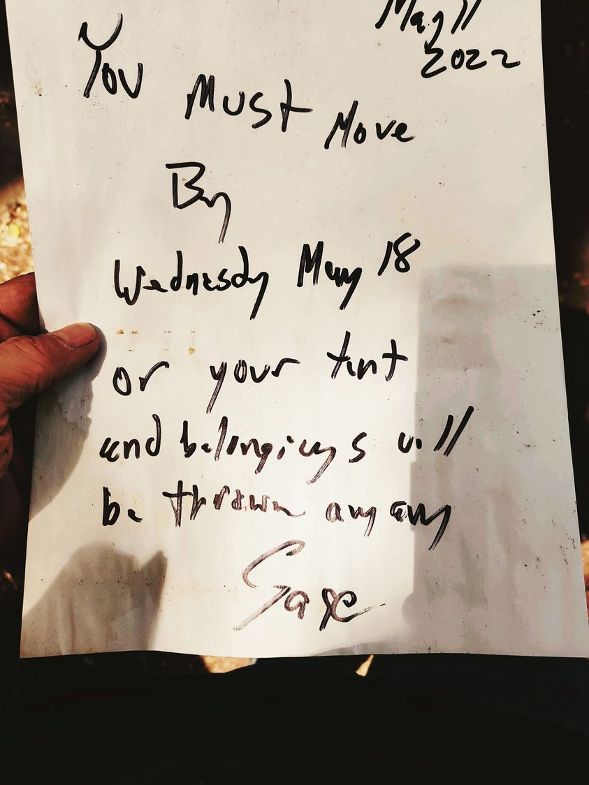

Mobile uploads
There is a lot of instinct in sheltering people in tents. Now that the weather has broken, I feel it's time for most people to head back out into the woods.
Single women, elderly and disabled people will be able to stay. A few men who keep our place running will also be able to stay.
But if you are a man (or a man/woman couple) with an able body and able mind, it's time to head out for the summer. You can come back when the snow flies.
And of course all will be able to come and spend the day, use the bathroom, internet and phone.